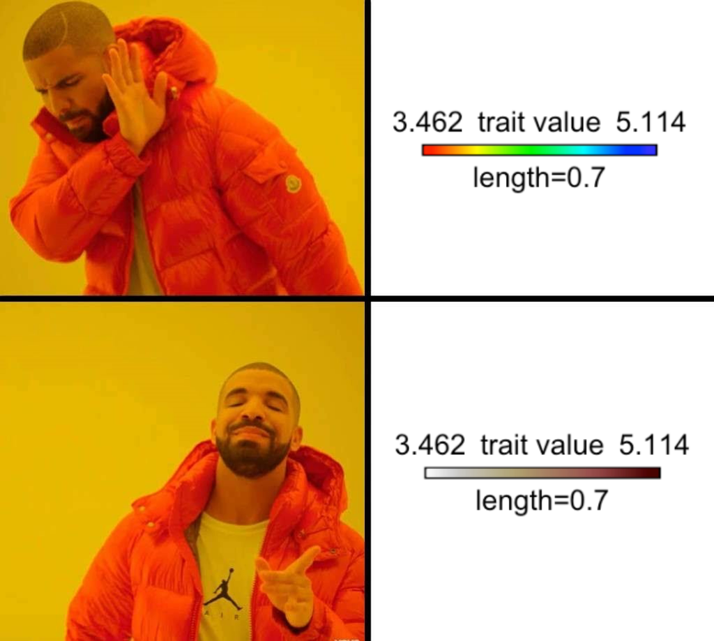

Rパッケージcanaperの紹介
How to use the giscus commenting system on a Distill blog
How to combine Conda, Docker, and R to run modular, reproducible bioinformatics pipelines

How to change the phytools default color scheme when visualizing the results of ancestral character state estimation
Keep it secret. Keep it safe.